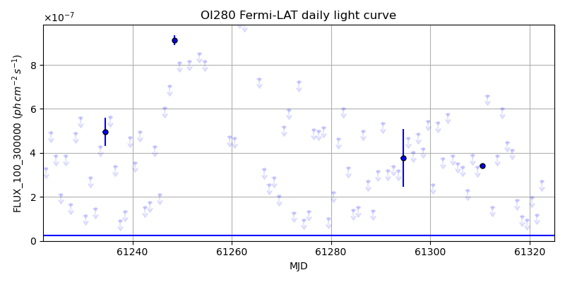
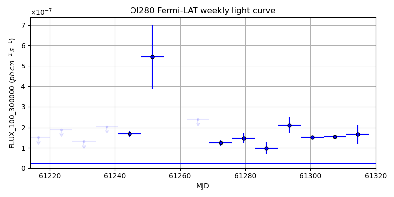
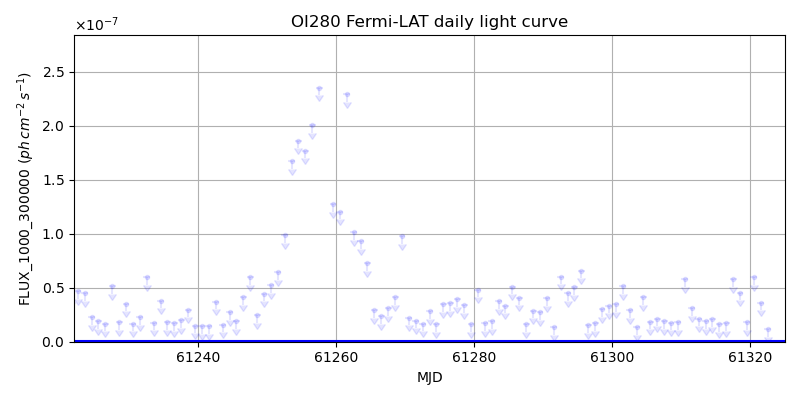
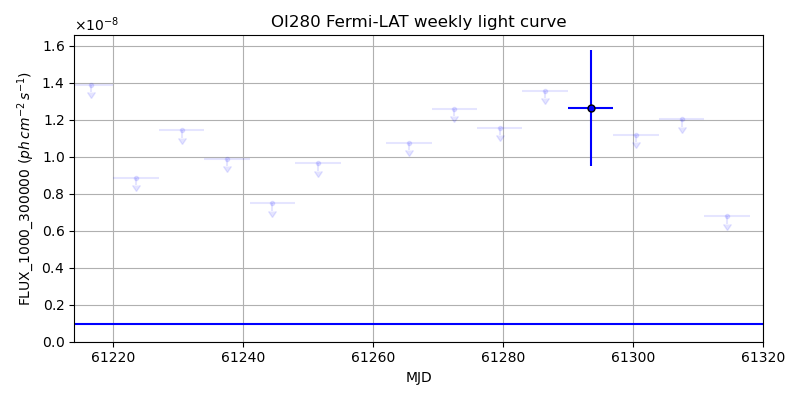

LAT Lightcurve site: https://fermi.gsfc.nasa.gov/ssc/data/access/lat/msl_lc/source/OI_280
NED: Query
Time of last update of this page: UT: 2026-10-10 15:19 (MJD: 61323.639)
| Property | Value |
|---|---|
| R.A. | 7:51:05.28 |
| Dec. | 12:36:50.4 |
| z | 0.889 |
| 3FGL SpectrumType | PowerLaw |
| 3FGL PL Index | 2.41 |
| 3FGL Flux_100_300000 | 2.42e-08 1 / (s cm2) |
| 3FGL Flux_1000_300000 | 9.38e-10 1 / (s cm2) |
| 3FGL Flux >200 GeV | 5.30e-13 1 / (s cm2) |
| 3FGL Extrap. Crab >200 GeV | 0.00 |
| 3FGL Flux After EBL Absorption >200GeV | 1.36e-14 1 / (s cm2) |
| 3FGL EBL Crab Fraction >200GeV | 0.00 |

| MJD | dMJD | Flux | dFlux | Frac3FGL | FracCrab>200GeV | EBLFracCrab>200GeV |
|---|---|---|---|---|---|---|
| 61318.50 | 0.50 | 1.10e-07 | 0.00e+00 | 0.00 | 0.00 | 0.00 |
| 61319.50 | 0.50 | 9.44e-08 | 0.00e+00 | 0.00 | 0.00 | 0.00 |
| 61320.50 | 0.50 | 1.96e-07 | 0.00e+00 | 0.00 | 0.00 | 0.00 |
| 61321.50 | 0.50 | 1.19e-07 | 0.00e+00 | 0.00 | 0.00 | 0.00 |
| 61322.50 | 0.50 | 2.72e-07 | 0.00e+00 | 0.00 | 0.00 | 0.00 |

| MJD | dMJD | Flux | dFlux | Frac3FGL | FracCrab>200GeV | EBLFracCrab>200GeV |
|---|---|---|---|---|---|---|
| 61286.50 | 3.50 | 9.82e-08 | 2.74e-08 | 4.06 | 0.01 | 0.00 |
| 61293.50 | 3.50 | 2.11e-07 | 4.15e-08 | 8.70 | 0.02 | 0.00 |
| 61300.50 | 3.50 | 1.51e-07 | 3.69e-09 | 6.23 | 0.01 | 0.00 |
| 61307.50 | 3.50 | 1.53e-07 | 3.57e-09 | 6.31 | 0.01 | 0.00 |
| 61314.50 | 3.50 | 1.66e-07 | 4.74e-08 | 6.85 | 0.02 | 0.00 |

| MJD | dMJD | Flux | dFlux | Frac3FGL | FracCrab>200GeV | EBLFracCrab>200GeV |
|---|---|---|---|---|---|---|
| 61318.50 | 0.50 | 4.54e-08 | 0.00e+00 | 0.00 | 0.00 | 0.00 |
| 61319.50 | 0.50 | 1.83e-08 | 0.00e+00 | 0.00 | 0.00 | 0.00 |
| 61320.50 | 0.50 | 6.01e-08 | 0.00e+00 | 0.00 | 0.00 | 0.00 |
| 61321.50 | 0.50 | 3.62e-08 | 0.00e+00 | 0.00 | 0.00 | 0.00 |
| 61322.50 | 0.50 | 1.15e-08 | 0.00e+00 | 0.00 | 0.00 | 0.00 |

| MJD | dMJD | Flux | dFlux | Frac3FGL | FracCrab>200GeV | EBLFracCrab>200GeV |
|---|---|---|---|---|---|---|
| 61286.50 | 3.50 | 1.36e-08 | 0.00e+00 | 0.00 | 0.00 | 0.00 |
| 61293.50 | 3.50 | 1.26e-08 | 3.15e-09 | 13.49 | 0.03 | 0.00 |
| 61300.50 | 3.50 | 1.12e-08 | 0.00e+00 | 0.00 | 0.00 | 0.00 |
| 61307.50 | 3.50 | 1.20e-08 | 0.00e+00 | 0.00 | 0.00 | 0.00 |
| 61314.50 | 3.50 | 6.78e-09 | 0.00e+00 | 0.00 | 0.00 | 0.00 |
--------------------------------------------------------- Using user-supplied coords: 7:51:05.28 12:36:50.4 2000 --------------------------------------------------------- FLWO UT night of: 2026-10-11 Local Sid. @ Midnight: 00:55 Sunset (-15.0) (local, UT): 19:04 02:04 Sunrise (-15.0) (local, UT): 05:18 12:18 Moonrise (local, UT): Moonset (local, UT): Moon phase: 0.01 --------------------------------------------------------- AzTime LSID UT Obj_el Obj_az Mn_el Mn_az Sep. --------------------------------------------------------- 19:04 19:58 02:04 -45.8 2.2 -16.1 264.2 84.0 19:34 20:29 02:34 -44.9 12.6 -22.3 267.8 84.3 20:04 20:59 03:04 -43.0 22.5 -28.5 271.5 84.6 20:34 21:29 03:34 -40.1 31.5 -34.7 275.4 84.9 21:04 21:59 04:04 -36.4 39.5 -40.8 279.7 85.2 21:34 22:29 04:34 -32.0 46.7 -46.8 284.6 85.5 22:04 22:59 05:04 -27.1 53.0 -52.7 290.5 85.8 22:34 23:29 05:34 -21.8 58.6 -58.4 297.7 86.2 23:04 23:59 06:04 -16.2 63.6 -63.6 307.3 86.5 23:34 00:29 06:34 -10.4 68.1 -68.1 320.3 86.9 00:04 00:59 07:04 -2.9 72.4 -71.3 338.2 87.2 00:34 01:29 07:34 2.1 76.4 -72.6 0.4 87.6 01:04 01:59 08:04 8.2 80.2 -71.5 22.7 88.0 01:34 02:30 08:34 14.5 84.0 -68.3 40.8 88.3 02:04 03:00 09:04 20.9 87.8 -63.9 54.1 88.7 02:34 03:30 09:34 27.2 91.7 -58.7 63.8 89.0 03:04 04:00 10:04 33.6 95.9 -53.1 71.2 89.4 03:34 04:30 10:34 39.9 100.6 -47.3 77.2 89.7 04:04 05:00 11:04 46.2 105.9 -41.4 82.2 90.0 04:34 05:30 11:34 52.2 112.3 -35.3 86.6 90.4 05:04 06:00 12:04 58.0 120.3 -29.2 90.6 90.7 05:18 06:14 12:18 60.4 124.7 -26.5 92.4 90.8 --------------------------------------------------------- Dark hours >55 deg.: 0.49 srcstart (UT): 2026-10-11 11:48 srcend (UT): 2026-10-11 12:17